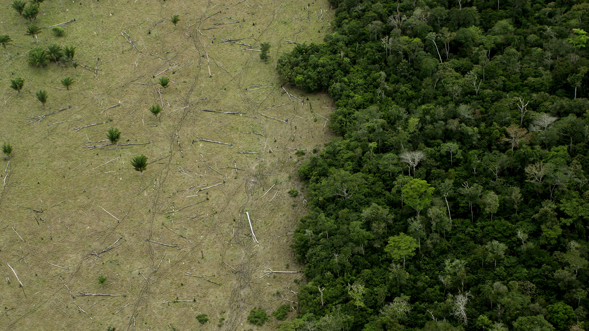
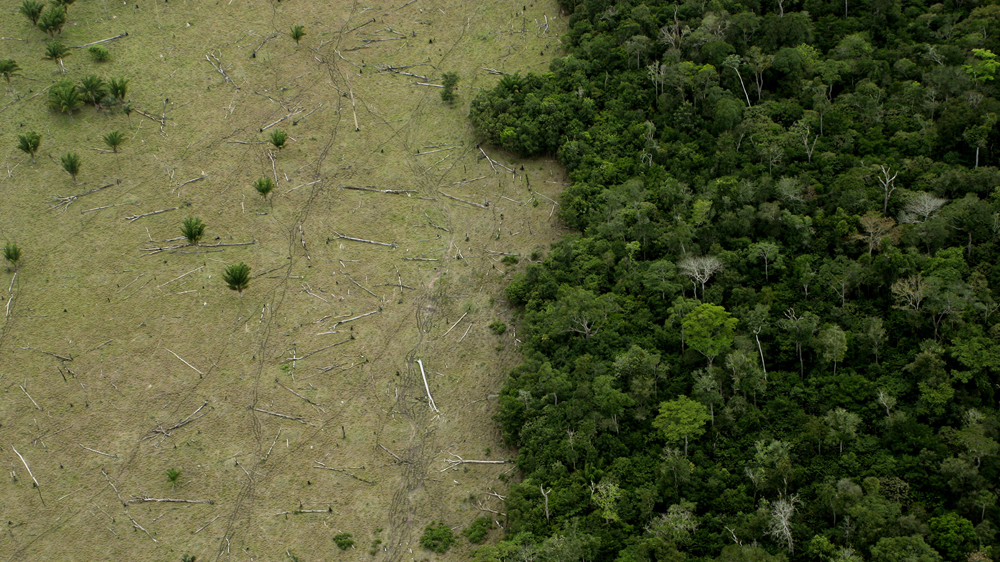

Deforestation is the removal or clearing of forests, often to make way for farming, buildings, or mining. This process harms the environment by destroying animal habitats, increasing carbon dioxide in the air, and contributing to climate change. Forests are important because they help clean the air, store water, and protect the land.
In Aotearoa New Zealand, the concept of kaitiakitanga is about guardianship and caring for the environment. It is a Māori value that teaches us to respect and protect nature for future generations. When we fight against deforestation, we are practising kaitiakitanga by protecting forests, wildlife, and the Earth’s natural balance.
Deforestation is a serious problem because it harms the balance of nature. Trees play a big role in absorbing carbon dioxide and giving us oxygen. When they are cut down, the air becomes more polluted and the Earth gets warmer. That’s why we must act now to save our forests before it’s too late.
 
